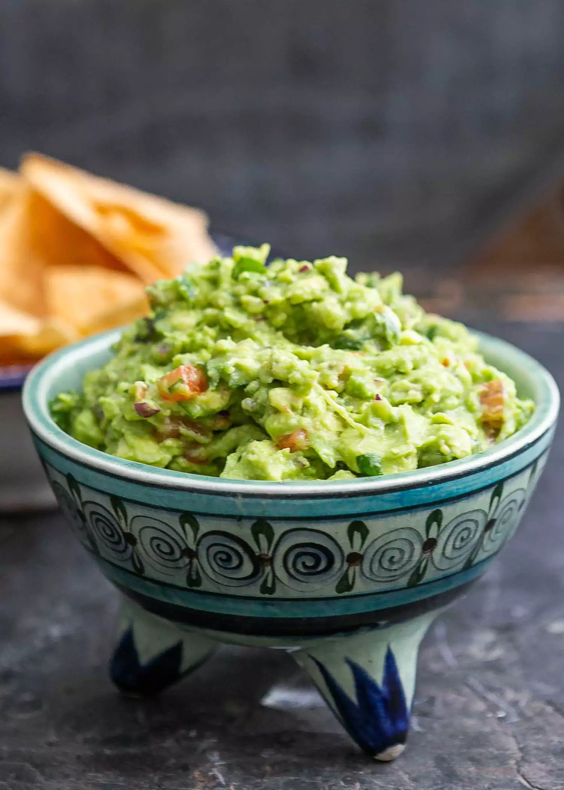

Guacamole

Description
With the Superbowl coming up soon, now's a great time to learn how to make some guacamole! It's a great appetizer that everyone enjoys, and is easy to make.
Ingredients
- Avocadoes
- Lime
- Salt
- Onion and roman tomatoes
- Cilantro, galic, and cayenne pepper
Steps
- Mash avocadoes, lime juice, and salt together. Mix in tomatoes, onion, cilantro, and carlic. Stir in cayenne pepper
- Serve immediately, or cover and refrigerate for 1 hour for improved flavor.